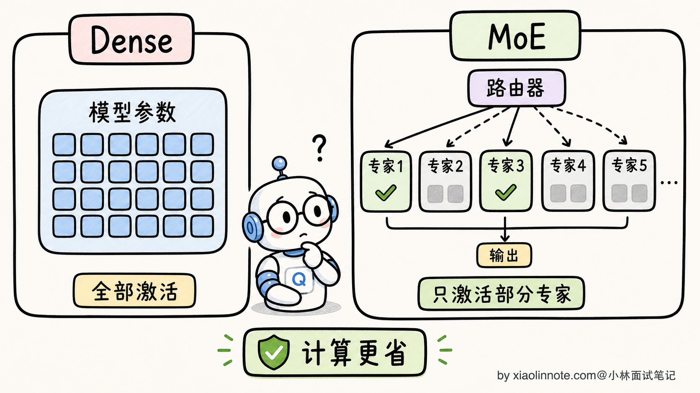
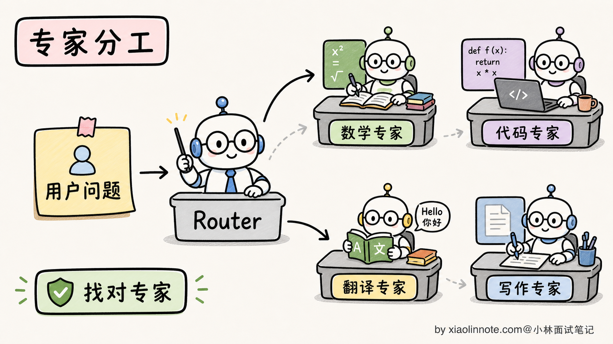
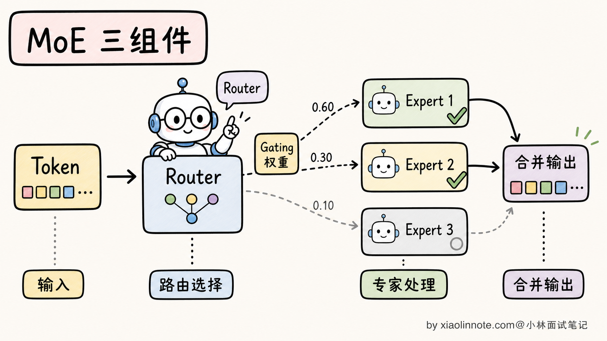
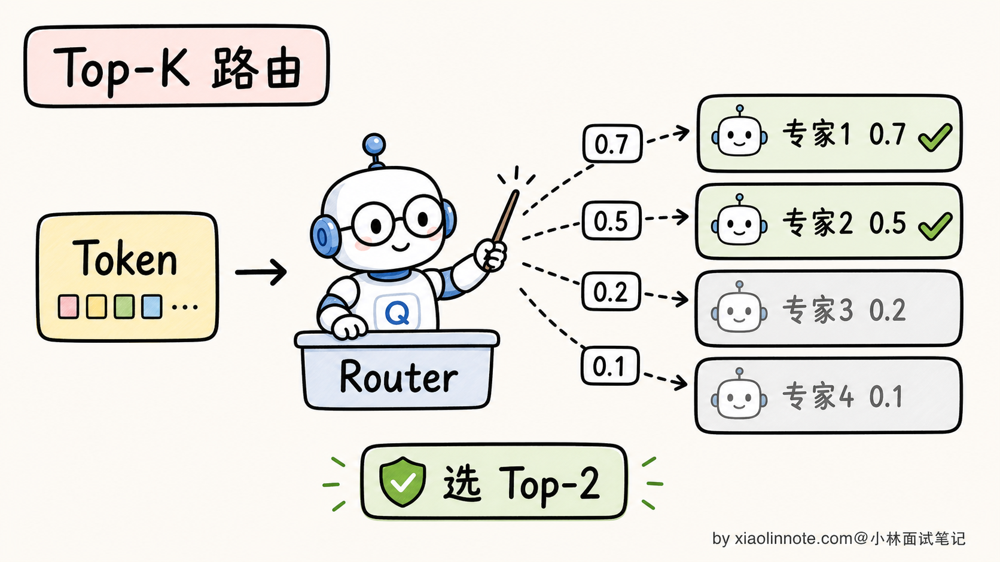
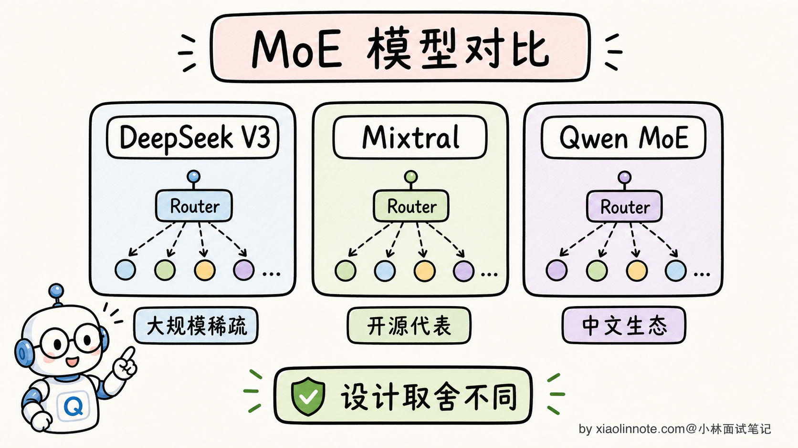
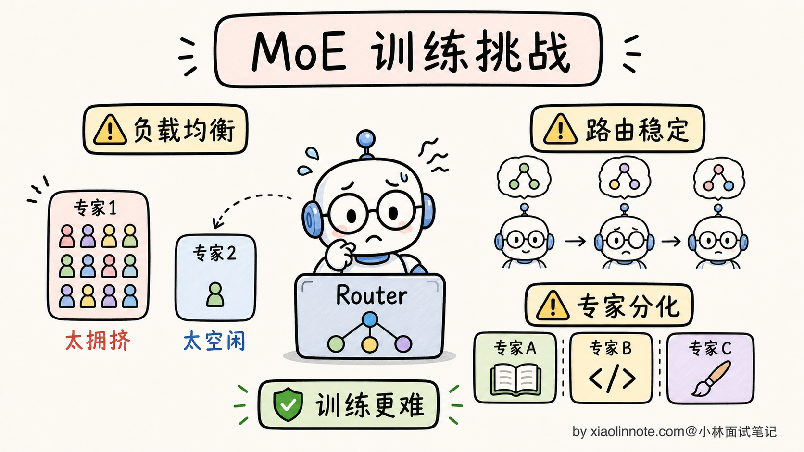
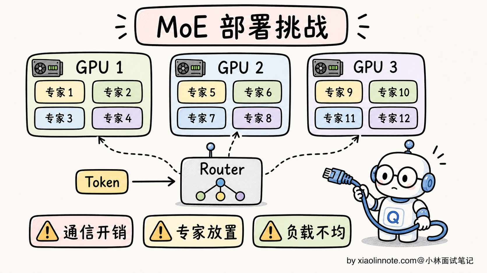
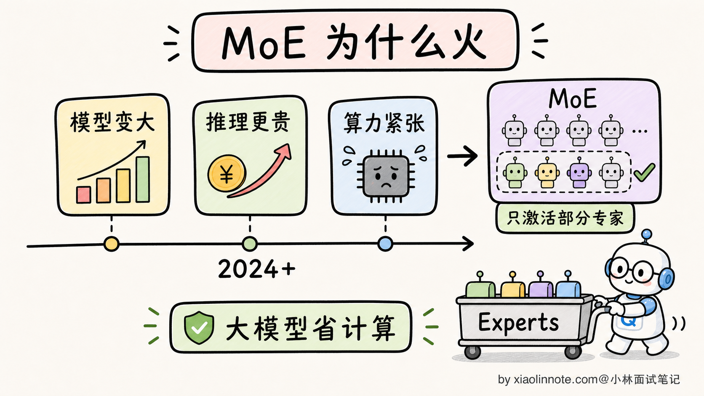

本篇目录
19. MoE 混合专家模型是什么？DeepSeek V3、Qwen 为什么用 MoE？
👔面试官：来讲讲什么是 MoE 混合专家模型？为什么 DeepSeek V3、Qwen 这些主流大模型现在都在用 MoE？
🙋♂️我：MoE 就是把多个小模型合在一起，每次用一个，效果好。
👔面试官：……「合在一起」是怎么合的？「每次用一个」具体是哪个组件决定的？再说，MoE 是 2017 年 Google 就提出的，为什么 2024 年才在 LLM 领域火起来？
🙋♂️我：哦哦，应该是有个 Router 来选用哪个专家。火起来是因为 DeepSeek？
👔面试官：Router 我接受，DeepSeek 也对，但你只说了「火起来」，没说「为什么火起来」。MoE 解决了什么 Dense 模型解决不了的问题？为什么 DeepSeek V3 总参数 671B 但激活只有 37B？这种「671B / 37B」的设计哲学是什么？
🙋♂️我：呃……我没仔细看过 DeepSeek 的论文。
👔面试官：MoE 的核心卖点是「总参数大但激活参数小」，能让模型在推理时只用一小部分参数，但训练时能学到一大堆知识。这个 trade-off 你能讲清楚吗？还有，MoE 训练有什么坑？专家不平衡是什么意思？
🙋♂️我：呃……
👔面试官：专家不平衡（Expert Imbalance）是 MoE 训练的著名难题，意思是 Router 可能偏爱某几个专家，导致其他专家根本没被训过。这种问题不知道，去面试就是被怼。回去补一下。
问到这里 MoE 这道题的真面目才浮出来，它的核心思想不是「拼几个小模型」，而是「稀疏激活换便宜推理」。Router 怎么挑专家、训练为什么会塌、推理为什么便宜，这几条得一条条拆。
💡 简要回答
我理解 MoE（Mixture of Experts，混合专家模型）的核心思想是把传统 Transformer 中的 FFN（前馈网络）层替换成 N 个并行的「专家网络」，再加一个 Router 来决定每个 token 进哪个专家。
核心设计哲学是「总参数大，但激活参数小」。比如 DeepSeek V3 总参数 671B，但每个 token 推理时只激活 37B（约 1/18）。这样能用「总参数 671B 的知识量」+「激活参数 37B 的推理成本」，达到 Dense 模型做不到的「学得多 + 跑得快」。
具体看 MoE 三个核心组件。
1. 多个专家（Experts）：把 Transformer 每层的 FFN 复制 N 份（典型 N=8、64、256），每份就是一个独立的「专家」，在训练中各自学到不同的「擅长方向」（语言、代码、数学、知识等）
2. Router（路由器）：每个 token 进到 MoE 层时，Router 算一个「专家偏好分数」，决定这个 token 该去哪个专家。最常见的是 Top-K 路由（K=1 或 K=2），DeepSeek V3 是 Top-8 + 1 个共享专家
3. 负载均衡：训练时要加辅助损失防止「专家不平衡」（Router 偏爱某几个专家，其他专家没被训过），保证所有专家都在学
为什么 DeepSeek V3、Mixtral、部分 Qwen 模型都在用 MoE？
- 训练性价比高：同样算力下训出来的 MoE 模型，效果接近一个大 Dense 模型，但参数总量是 Dense 的 5-20 倍
- 推理成本可控：每个 token 只用一小部分参数，推理速度和小 Dense 模型相当
- 可扩展性强：要增加模型容量，加专家数比加层数容易
但 MoE 也有挑战：训练难度高（专家不平衡、Router 训不稳、并行化复杂）；显存占用高（虽然激活只用 37B，但所有专家的参数都要加载到显存，671B 全量）；推理时通信开销（分布式部署时专家分散在多张 GPU，token 路由有跨卡通信）。
MoE 是 2024-2026 年大模型最重要的架构方向之一，DeepSeek V3、DeepSeek R1、Mixtral、Grok、部分 Qwen MoE 模型都用了这条路线。但它不是唯一答案，很多主力 Dense 模型依然在生产里很常见，尤其是中小规模和部署稳定性优先的场景。
📝 详细解析
MoE 是什么？为什么 Dense 模型不够用了
要理解 MoE，得先看清楚传统 Dense 模型的瓶颈。
Dense 模型（标准 Transformer）的特点是：每个 token 推理时，都要走一遍模型的全部参数。一个 175B 的 GPT-3，每生成一个 token 都要让 175B 个参数全部参与计算。
这就带来一个棘手的权衡：
- 想提升模型能力，得加参数（更多知识、更强推理）
- 但参数加倍，推理成本（计算量 + 显存 + 延迟）也加倍
- 一台 8 卡 H100 服务器，能跑动 70B Dense 模型，但跑不动 175B

MoE 的核心创新是打破「知识量」和「推理成本」的绑定。它的思路是：
- 模型有 N 个专家，每个专家是一份独立的 FFN
- 每个 token 进来时，Router 只挑 K 个专家来处理（K 远小于 N）
- 总参数量 = N × 单专家参数量，知识量很大
- 激活参数量 = K × 单专家参数量，推理成本只有总参数的 K/N
直观的类比：Dense 像一本厚厚的百科全书，你查一个词要把整本书过一遍；MoE 像一个图书馆，前台咨询员（Router）听到你的问题，告诉你去 3 楼的「数学专家区」就好，不用整个图书馆都搜索。

这个设计让 MoE 在「同样推理成本下，参数量可以做到 Dense 的几倍甚至几十倍」。这就是 MoE 现在大火的根本原因。
MoE 的三个核心组件
理解了核心思想，下面拆解 MoE 的三个具体组件。
1. 多个专家（Experts）
MoE 把 Transformer 每一层的 FFN 替换成 N 个并行的 FFN。每个 FFN 结构完全一样，但参数独立，在训练中各自学会不同的「擅长方向」。
具体专家数 N 的选择是个工程权衡：
- N 太小（比如 N=4）：专家不够细分，效果接近 Dense
- N 太大（比如 N=512）：每个专家太小、太专门，难以学到通用能力
- 业界主流：N=8（Mixtral）、N=64（早期 GShard）、N=256（DeepSeek V3）
每个专家学到的「擅长方向」不是预先指定的，而是在训练中自然涌现的。研究者发现训练后的专家会自发分化：有的专家偏向数学符号、有的偏向代码语法、有的偏向常用语言、有的偏向稀有词汇等等。
2. Router（路由器）
Router 是 MoE 最关键的组件，决定每个 token 该去哪个专家。结构通常是一个简单的线性层：
# Router 的核心计算（简化版）
gate_logits = token_embedding @ W_router # 算每个专家的偏好分数
expert_weights = softmax(gate_logits) # 归一化成概率
top_k_experts = topk(expert_weights, k=2) # 选 Top-K 个专家每个 token 进来时，Router 看它的 embedding 算出 N 个分数，挑分数最高的 K 个专家来处理这个 token。最常见的 K 值：
- K=1（Switch Transformer 风格）：每个 token 只去 1 个专家，最稀疏，效率最高
- K=2（Mixtral 风格）：每个 token 去 2 个专家，效果和效率折中
- K=8（DeepSeek V3）：用更多专家，配合 256 个细粒度专家

3. 负载均衡损失
朴素的 Router 训练有个著名问题：专家不平衡（Expert Imbalance）。
什么意思？训练初期 Router 是随机的，可能偶然几个专家分数高、被选中、得到训练；其他专家分数低、不被选中、不更新参数；下一轮还是那几个高分专家被选中、继续被训；恶性循环之后，整个模型只用 1-2 个专家在工作，其他专家躺平。

为了解决这个问题，MoE 训练时要加一个负载均衡损失（Load Balancing Loss）：
# 负载均衡损失（直觉版）
expert_load = mean(expert_probability_distribution) # 每个专家的平均使用率
balance_loss = variance(expert_load) # 使用率的方差（越大越不平衡）
total_loss = main_loss + α × balance_loss # 加到主损失里这个损失项把「专家使用率不均」的方差作为惩罚加进总损失，迫使 Router 把任务均匀分配给所有专家。α 是个超参，平衡主任务和均衡性。
DeepSeek V3 在这个基础上还提出了 Auxiliary-Loss-Free Load Balancing 策略，不用额外的辅助损失，而是动态调整每个专家的「偏置项」让负载自然均衡，进一步降低了对主任务的干扰。
总参数 vs 激活参数：MoE 的设计哲学
MoE 最反直觉、也最容易在面试踩坑的概念，是「总参数 vs 激活参数」的区别。
来看一个具体计算：
Dense 模型 70B：
推理一个 token 要算 70B 参数
显存（FP16）：140GB
推理速度：以 70B 参数的延迟为基准
MoE 模型 671B / 37B（DeepSeek V3）：
推理一个 token 只算 37B 参数（包括 attention + 激活的专家 FFN）
显存（FP16）：1.3TB（所有专家都要加载）
推理速度：接近 37B Dense 的延迟（!!!）注意三个反差：
第一，总参数 671B vs 激活参数 37B。模型「学过的东西」按 671B 算（专家分化、覆盖各种领域），但「每个 token 实际算的」只有 37B。
第二，显存占用按总参数走（1.3TB FP16，量化后约 350GB INT4）。所有专家都要常驻显存，不然 Router 路到没加载的专家就没法算。
第三，推理速度按激活参数走。每个 token 只算 37B，所以 latency 接近 37B Dense 模型，而不是 671B。
这种「学得多 + 跑得快」的甜蜜组合，是 MoE 在 LLM 时代爆发的根本原因。Dense 模型走到 70B 量级已经是推理成本的极限，再往上 175B、500B、1T，推理几乎跑不起来；MoE 通过把激活参数控制在 37B-100B 这个区间，可以把总参数推到 600B、1T、甚至更多。
主流 MoE 模型对比：DeepSeek V3、Mixtral、Qwen 各自的设计
不同家公司的 MoE 设计哲学差别挺大。来看几个代表：
DeepSeek V3 / R1（256 专家细粒度路由）
- 总参数 671B / 激活 37B（5.5% 激活率）
- 每层 256 个 routed experts + 1 个 shared expert
- 每个 token 选 Top-8 routed + 1 shared = 9 个专家激活
- 设计哲学：专家越多越细分，激活更细粒度
- 创新点：MLA（Multi-head Latent Attention）+ Auxiliary-Loss-Free 负载均衡
Mixtral 8x7B（早期主流配置）
- 总参数约 47B / 激活约 13B（28% 激活率）
- 每层 8 个 experts，每个 token 选 Top-2 激活
- 设计哲学：专家少而精，激活率较高保证质量
- 是 2023 年开源 MoE 的标杆
Qwen 系列
- Qwen MoE 30B-A3B：30B 总参数 / 3B 激活（10% 激活率）
- 类似 DeepSeek 的细粒度专家路线
- 注重小激活参数下的性能
Grok 1（314B / 78.5B）
- xAI 早期开源的 MoE，激活率较高（25%）
- 设计相对保守，没有 DeepSeek 那么激进

观察这些模型，能看出 MoE 设计的几个趋势：
- 专家数越来越多：8 -> 64 -> 256
- 激活率越来越低：28% -> 10% -> 5.5%
- 共享专家越来越普及：DeepSeek V3 引入 1 个 shared expert，避免常见知识被反复学
这个趋势的内在逻辑是「更细粒度的稀疏化 = 更高的算力性价比」。256 个专家、激活 5%，相当于一个总参数极大但每次只用一小撮的智能图书馆。
MoE 的三大训练挑战
MoE 看起来很美，但训练起来比 Dense 难得多。三个最大的坑：
挑战 1：专家不平衡
前面讲过，Router 容易陷入「只用几个专家」的恶性循环。除了负载均衡损失，业界还发展出几种应对：
- Expert Choice Routing：反过来让专家挑 token，每个专家固定吃 N 个 token，自然平衡
- Auxiliary-Loss-Free：DeepSeek V3 用，动态调整专家偏置项，不引入额外损失
- 温度退火：训练初期 Router 用高温采样（更随机），让所有专家都有机会被探索
挑战 2：Router 训练不稳定
Router 是个分类网络（要选 Top-K 专家），梯度通过 softmax + topk 这两个不可微操作传播，本身就不稳定。常见的稳定化技巧：
- Noisy Top-K Gating：训练时给 Router 输出加噪声，鼓励探索
- Z-loss：限制 Router logits 的范数，防止极端化
- Soft 路由 + Hard 路由切换：训练时用 soft（加权所有专家），推理时用 hard（只激活 Top-K）
挑战 3：分布式并行复杂
MoE 模型的并行方式比 Dense 复杂得多。Dense 只用 Tensor Parallel + Pipeline Parallel 就够了，MoE 还要考虑：
- Expert Parallel：不同专家分配到不同 GPU，token 在 GPU 之间路由
- All-to-All 通信：每个 token 选了几个专家后，要把 token 发送到对应专家所在的 GPU，处理完再发回来。这是 MoE 训练通信开销最大的环节

通信开销让 MoE 在多机训练时效率打折扣。DeepSeek V3 的工程优化里有大量篇幅讲怎么把 All-to-All 通信和计算重叠（DualPipe 算法），是工程实力的体现。
MoE 的部署挑战
训练完之后，部署 MoE 还有自己的挑战。
挑战 1：显存占用按总参数走
虽然每个 token 只激活 37B，但所有 671B 参数都要加载到显存里（不然 Router 路由到没加载的专家就没法算）。这意味着 DeepSeek V3 部署需要至少 1.3TB FP16 显存（量化后约 350GB INT4），最少 8 卡 H100。这对很多企业来说是不小的硬件投入。
挑战 2：批量推理时通信开销大
单 token 推理 MoE 还行，但批量推理（一次处理几十个用户请求）时，不同 token 选不同专家，导致大量跨卡通信。这就是为什么 MoE 模型的「吞吐量」往往不如同等激活参数的 Dense 模型。
挑战 3：专家不均衡导致负载不均
部署时，如果某个专家热门（被很多 token 路由到），它所在的 GPU 就会过载，其他 GPU 空闲。需要动态负载均衡机制（专家迁移、复制热门专家等），这又是一个工程坑。

应对这些挑战，业界有一系列工具和优化（vLLM 的 MoE 并行支持、SGLang 的专家亲和性调度、TensorRT-LLM 的 MoE 优化），但整体来说，MoE 部署的技术成熟度还在快速演进。这也是为什么很多公司虽然喜欢 MoE 的训练性价比，但部署时还是选 Dense 模型的原因。
为什么 2024 年后 MoE 才在 LLM 领域火起来
最后一个值得讨论的问题：MoE 不是新东西，1991 年就有人提出，2017 Google 的 GShard 就用过 MoE 训过 600B 模型。为什么直到 2024 年 DeepSeek V3 才让整个圈子开始用 MoE？
三个原因：
1. 训练经验积累到位了
早期 MoE 训练极其不稳定（专家不平衡、Router 崩溃、loss 震荡），需要大量工程经验才能调好。2017-2023 年这几年里，Google、Meta、DeepSeek 等团队累积了一整套 MoE 训练 know-how（负载均衡、噪声路由、专家容量等），这些技术在 2024 年成熟到「开源社区也能复现」的程度。
2. 推理框架支持完善了
2023 年之前，主流推理框架对 MoE 的支持很差，部署困难。2024 年 vLLM、SGLang、TensorRT-LLM 都加入了 MoE 优化（专家并行、All-to-All 通信优化），让 MoE 模型能在生产环境跑起来。
3. DeepSeek V3 把成本打下来了
最关键的一击是 DeepSeek V3 在 2024 年底公开了一个 671B 总参数、37B 激活参数的 MoE 模型，并报告了非常低的训练成本和很强的效果。这让大家看到：MoE 不只是论文里的好方法，是真的能用更高的训练和推理性价比做出顶级模型。整个开源社区被点燃，2025 年之后越来越多大模型开始认真评估 MoE 路线。

到 2026 年，MoE 已经成为大模型架构的主流方向之一，但还不能说「几乎所有新模型都用 MoE」。Dense 模型依然有很强生命力，尤其在 1B-70B 这类部署稳定、延迟敏感、工程复杂度要低的场景。更稳的说法是：MoE 适合把总容量做大、把激活成本压低；Dense 适合部署简单、负载稳定、延迟可控。
🎯 面试总结
回到开头那段对话，问到 MoE，最重要的是先把核心思想讲清楚。MoE 把 Transformer 中的 FFN 复制成 N 份「专家」，加一个 Router 选 Top-K 个来处理每个 token。最关键的设计哲学是总参数 vs 激活参数解耦：训练时学 N 倍知识，推理时只用 K/N 的算力。这一句先点出来，就抓到了 MoE 的本质。
接下来把三个核心组件讲清。多个专家（学到不同擅长方向，比如代码、数学、中文等）、Router（一个简单的线性层算分 + Top-K 选取）、负载均衡损失（防止 Router 偏爱某几个专家让其他专家躺平）。其中专家不平衡是 MoE 训练最著名的难题，DeepSeek V3 用 Auxiliary-Loss-Free 策略（动态调专家偏置项不引入额外损失）进一步优化，是 2024 年的工程亮点。
然后举具体的主流模型对比。DeepSeek V3 用 256 个专家、激活 9 个（Top-8 routed + 1 shared），671B / 37B、激活率 5.5%；Mixtral 8x7B 用 8 专家激活 2 个，47B / 13B、激活率 28%。趋势是「专家越来越多、激活率越来越低」，更细粒度的稀疏化带来更好的算力性价比。能背出 DeepSeek V3 的具体配置数字，会让面试官知道你真的看过论文。
最关键的一句话是讲清 MoE 的训练 + 部署挑战。训练上有专家不平衡、Router 不稳、All-to-All 通信复杂这些坑；部署上显存按总参数走、批量推理通信开销大、热门专家负载不均。能讲出「显存按总参数走，但推理速度按激活参数走」这一句反直觉但精确的话，面试官就知道你真的理解 MoE 在工程上的取舍。
如果还想再加分，可以指出 MoE 是 1991 年就有的老想法，2024 年之后因为「训练经验成熟 + 推理框架完善 + DeepSeek 把成本打下来」才在 LLM 领域真正爆发。它是主流方向，但不是唯一方向，这种「知道趋势，也知道边界」的表达会更像真实工程师。
对了，大模型面试题会在「公众号@小林面试笔记题」持续更新，林友们赶紧关注起来，别错过最新干货哦！